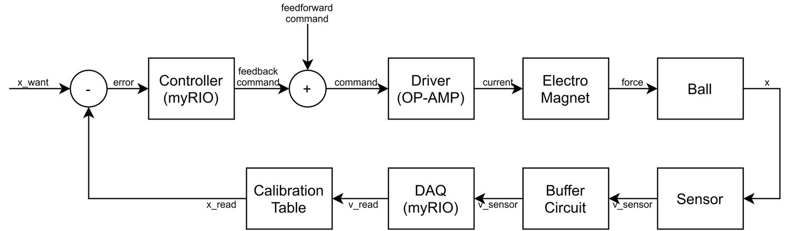

Magnetic Levitation

Magnetic leviation system diagram
Electric current in a coil forms a magnetic field, which will exert attraction force on an iron ball. Ideally, at any vertical position (equilibrium henceforth), there exists a right amount of current I, which can precisely cancel the gravity force on that iron ball. However, that feedforward cancellation is not stable. If we disturb the iron ball by moving it upward a little bit, the ball will experience a denser magnetic field and will be attracted further upward. As a result, any disturbance will instablize the feedforward cancellation.
To stabilize the iron ball in an equilibrium position, we use a pair of LED-phototransistor as a position sensor, and construct a feedback loop.

x indicates vertical position
The basic idea is that we reduce the current when the ball gets close to the electromagnet. The controller is an intuitive PID controller. The buffer circuit and driver are made of OP-AMP and several resistors. The demo is as follows.
Filmed March 3 2021
Acknowledgment:
This is MECHENG552 Lab 2. This great course is instructed by Prof. Shorya Awtar.
The mechanical setup was created by UM Mechanical Engineering Machine Shop. I did the circuit and control.
The magnetic field in the thumbnail image is copied from this link